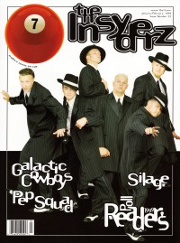

CMnexus: Contemporary Christian culture, music, and media.
|
|
7ball, Jan / Feb 1999, #22
| Cover |
|---|
|  | | Writers in this Issue |
|---|
Bumgarner, Dave
Christopher, Scott W.
Cunningham, J J
Ebel, Jeff
Knight, Steve
Newcomb, Brian Quincy
P.R.E.Z.
Strang, Cameron
Thompson, John J.
Tudor, Steve
Walker, Derek
Waltner, Suzie
Well, Chris
Zhito, Lisa
|
Cover Feature:
- "Going Outside" by Lisa Zhito
- "Onward Christian Soldiers"
Article:
- "Still Rockin'" by Brian Quincy Newcomb
- "Sasses for the Masses" by Steve Tudor, Dave Bumgarner
- "Vegas, Baby, Vegas" by John J. Thompson
Bankshots:History:Album Review:blah, blah, blah: "Nothing Has Happened Like I Thought It Would" by Cameron Strang
This issue of 7ball came bundled with GAS #11. |